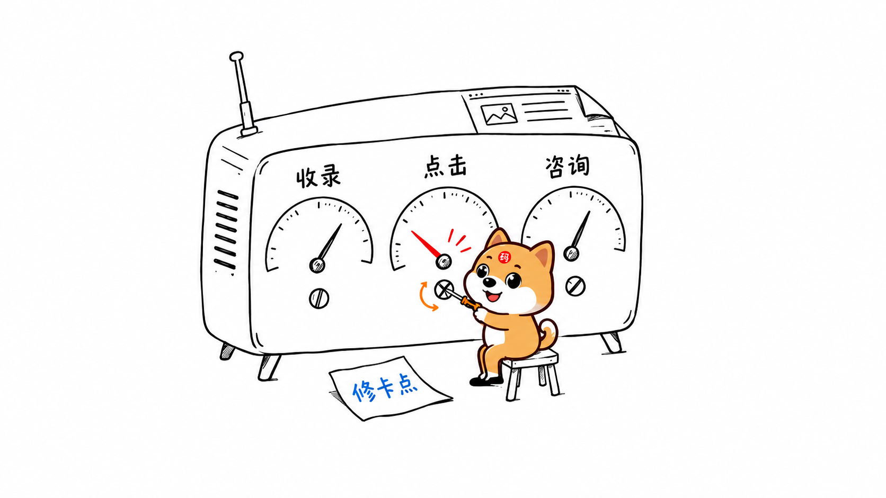
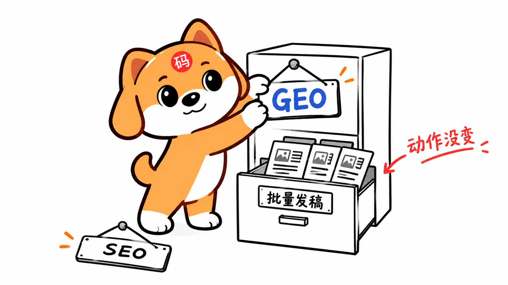

案例实战 · 14 / 14
上线检查清单：正文、链接、索引、证据、询盘逐项过
案例实战案例第 14 / 14 讲图文可选练习
这一讲会解决哪些问题
先把这四件事干完，别追着新词团团转

技术、专业内容、评估，三者互补
别吹过去多强，先老老实实说真话

别拿脚本刷屏，别藏隐蔽代码，别抹黑同行
用真实材料和可重复记录交付

最后的最后，还是回到需求与变现
动手练习与检查工具
以下为整理时补充的练习，可按自己的业务填写；文章正文取自黄啊码原文段落。
把这一讲用到自己的业务
- 定义验收范围列出页面、产品版本、目标问题与渠道。注明基础检查、条件适用和实验项，范围外项目写不适用及理由。
- 逐项留证据为每个勾选项保存网址、截图、响应或材料记录。发现问题进入修复清单，修复后按相同条件检查。
- 核对业务一致让产品、内容和承接人员确认关键事实与服务边界。检查平台稿、FAQ、价格与案例是否仍有过期或互相矛盾之处。
- 安排持续复查按产品和业务变化安排频率，保持问题集、版本与来源口径。把观察、解释、已验证结果和未完成项分别报告。
本节交付：一份范围明确、证据可查、未完成项可行动的验收报告，并能继续连接问题库、事实库、公开证据与业务复盘。
判断一下 · 所有验收项都勾选后，可以直接宣称什么？
本节判断题单选
选择后查看解释，可重新判断。
直接阅读答案说明
动作验收、平台处理、样本表现和业务结果属于不同证据层。完成检查后仍需维护和复查，不能替外部系统作保证。
动手 · 五组验收清单
逐项核对，再留下证据26 项
技术与体验
内容与事实
公开证据
答案评估
业务承接
勾选用于记录检查进度。证据、范围、不适用理由和未完成项仍需附在验收报告中。